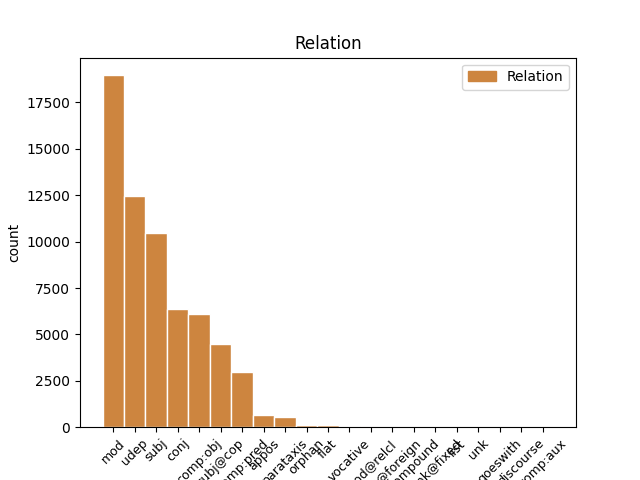
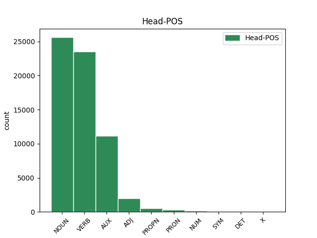
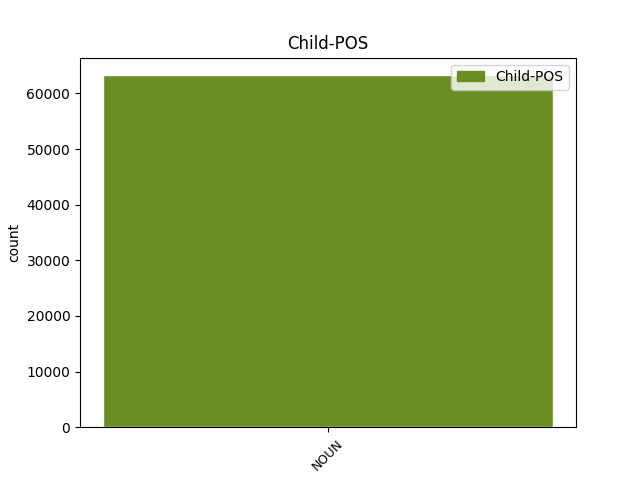

Distribution of features within this leaf



Agreement Rules sorted by frequency.
- When the dependent token is the modifer(mod) of the head token, and the dependent token is NOUN.
1 Töötud _ _ _ _ 0 _ _ _
2 töö _ _ _ _ 0 _ _ _
3 otsimise otsimine NOUN S Case=Gen|Number=Sing 4 mod _ _
4 meetodi meetod NOUN S Case=Gen|Number=Sing 0 _ _ _
5 järgi _ _ _ _ 0 _ _ _
6 , _ _ _ _ 0 _ _ _
7 % _ _ _ _ 0 _ _ _
8 , _ _ _ _ 0 _ _ _
9 1995-2000 _ _ _ _ 0 _ _ _
1 vaeghõivatud vaeg_hõiva=tu NOUN S Case=Nom|Number=Plur|Tense=Past|VerbForm=Part|Voice=Pass 3 subj _ _
2 - _ _ _ _ 0 _ _ _
3 soovivad soovima VERB V Mood=Ind|Number=Plur|Person=3|Tense=Pres|VerbForm=Fin|Voice=Act 0 _ _ _
4 rohkem _ _ _ _ 0 _ _ _
5 töötada _ _ _ _ 0 _ _ _
6 ja _ _ _ _ 0 _ _ _
7 on _ _ _ _ 0 _ _ _
8 valmis _ _ _ _ 0 _ _ _
9 lisatööd _ _ _ _ 0 _ _ _
10 kohe _ _ _ _ 0 _ _ _
11 ( _ _ _ _ 0 _ _ _
12 kahe _ _ _ _ 0 _ _ _
13 nädala _ _ _ _ 0 _ _ _
14 jooksul _ _ _ _ 0 _ _ _
15 ) _ _ _ _ 0 _ _ _
16 vastu _ _ _ _ 0 _ _ _
17 võtma _ _ _ _ 0 _ _ _
1 2001. _ _ _ _ 0 _ _ _
2 aasta _ _ _ _ 0 _ _ _
3 nõudluse _ _ _ _ 0 _ _ _
4 orientatsiooniga orientatsioon NOUN S Case=Com|Number=Sing 7 udep _ _
5 koduturule _ _ _ _ 0 _ _ _
6 aga _ _ _ _ 0 _ _ _
7 kaasnes kaasnema VERB V Mood=Ind|Number=Sing|Person=3|Tense=Past|VerbForm=Fin|Voice=Act 0 _ _ _
8 madalam _ _ _ _ 0 _ _ _
9 tootlikkus _ _ _ _ 0 _ _ _
10 ja _ _ _ _ 0 _ _ _
11 tööhõive _ _ _ _ 0 _ _ _
12 kasv _ _ _ _ 0 _ _ _
1 Töötud _ _ _ _ 0 _ _ _
2 riiklikku _ _ _ _ 0 _ _ _
3 tööhõivetalitusse _ _ _ _ 0 _ _ _
4 pöördumise pöördumine NOUN S Case=Gen|Number=Sing 0 _ _ _
5 ja _ _ _ _ 0 _ _ _
6 mittepöördumise mitte_pöördumine NOUN S Case=Gen|Number=Sing 4 conj _ _
7 järgi _ _ _ _ 0 _ _ _
8 , _ _ _ _ 0 _ _ _
9 % _ _ _ _ 0 _ _ _
10 , _ _ _ _ 0 _ _ _
11 1995-2000 _ _ _ _ 0 _ _ _
1 Ka _ _ _ _ 0 _ _ _
2 tootlikkus tootlikkus NOUN S Case=Nom|Number=Sing 3 subj@cop _ _
3 oli olema AUX V Mood=Ind|Number=Sing|Person=3|Tense=Past|VerbForm=Fin|Voice=Act 0 _ _ _
4 2000. _ _ _ _ 0 _ _ _
5 a. _ _ _ _ 0 _ _ _
6 kõrgem _ _ _ _ 0 _ _ _
7 kui _ _ _ _ 0 _ _ _
8 1999. _ _ _ _ 0 _ _ _
9 a. _ _ _ _ 0 _ _ _
10 ja _ _ _ _ 0 _ _ _
11 2000. _ _ _ _ 0 _ _ _
12 a. _ _ _ _ 0 _ _ _
13 , _ _ _ _ 0 _ _ _
14 st _ _ _ _ 0 _ _ _
15 masinatesse _ _ _ _ 0 _ _ _
16 ( _ _ _ _ 0 _ _ _
17 tehnoloogiasse _ _ _ _ 0 _ _ _
18 ) _ _ _ _ 0 _ _ _
19 tehtud _ _ _ _ 0 _ _ _
20 investeeringud _ _ _ _ 0 _ _ _
21 väljendusid _ _ _ _ 0 _ _ _
22 2000. _ _ _ _ 0 _ _ _
23 a. _ _ _ _ 0 _ _ _
24 kõrges _ _ _ _ 0 _ _ _
25 tootlikkuses _ _ _ _ 0 _ _ _
26 , _ _ _ _ 0 _ _ _
27 tekitamata _ _ _ _ 0 _ _ _
28 aga _ _ _ _ 0 _ _ _
29 täiendavat _ _ _ _ 0 _ _ _
30 tööhõivet _ _ _ _ 0 _ _ _
31 , _ _ _ _ 0 _ _ _
32 kuna _ _ _ _ 0 _ _ _
33 üldise _ _ _ _ 0 _ _ _
34 kõrgema _ _ _ _ 0 _ _ _
35 tehnoloogia _ _ _ _ 0 _ _ _
36 taseme _ _ _ _ 0 _ _ _
37 juures _ _ _ _ 0 _ _ _
38 hakati _ _ _ _ 0 _ _ _
39 eeldatavalt _ _ _ _ 0 _ _ _
40 enam _ _ _ _ 0 _ _ _
41 tootmist _ _ _ _ 0 _ _ _
42 ratsionaliseerima _ _ _ _ 0 _ _ _
43 . _ _ _ _ 0 _ _ _
1 Iirimaa _ _ _ _ 0 _ _ _
2 kogemus _ _ _ _ 0 _ _ _
3 näitas näitama VERB V Mood=Ind|Number=Sing|Person=3|Tense=Past|VerbForm=Fin|Voice=Act 0 _ _ _
4 aktiivsete _ _ _ _ 0 _ _ _
5 tööturupoliitika _ _ _ _ 0 _ _ _
6 meetmete _ _ _ _ 0 _ _ _
7 üliolulist _ _ _ _ 0 _ _ _
8 rolli roll NOUN S Case=Par|Number=Sing 3 comp:obj _ SpaceAfter=No
9 . _ _ _ _ 0 _ _ _
1 Majanduse _ _ _ _ 0 _ _ _
2 madalseisus _ _ _ _ 0 _ _ _
3 ( _ _ _ _ 0 _ _ _
4 1999 _ _ _ _ 0 _ _ _
5 ) _ _ _ _ 0 _ _ _
6 oli olema AUX V Mood=Ind|Number=Sing|Person=3|Tense=Past|VerbForm=Fin|Voice=Act 0 _ _ _
7 peamiseks _ _ _ _ 0 _ _ _
8 tööhõive _ _ _ _ 0 _ _ _
9 tekitajaks tekitaja NOUN S Case=Tra|Number=Sing 6 comp:pred _ _
10 välissektor _ _ _ _ 0 _ _ _
11 ( _ _ _ _ 0 _ _ _
12 väliskapital _ _ _ _ 0 _ _ _
13 kui _ _ _ _ 0 _ _ _
14 eksport _ _ _ _ 0 _ _ _
15 ) _ _ _ _ 0 _ _ _
16 . _ _ _ _ 0 _ _ _
1 Eesti _ _ _ _ 0 _ _ _
2 haridustase _ _ _ _ 0 _ _ _
3 : _ _ _ _ 0 _ _ _
4 esimene _ _ _ _ 0 _ _ _
5 tase _ _ _ _ 0 _ _ _
6 - _ _ _ _ 0 _ _ _
7 alg- _ _ _ _ 0 _ _ _
8 ja _ _ _ _ 0 _ _ _
9 põhiharidus _ _ _ _ 0 _ _ _
10 ; _ _ _ _ 0 _ _ _
11 teine _ _ _ _ 0 _ _ _
12 tase _ _ _ _ 0 _ _ _
13 - _ _ _ _ 0 _ _ _
14 keskharidus _ _ _ _ 0 _ _ _
15 , _ _ _ _ 0 _ _ _
16 kutseharidus _ _ _ _ 0 _ _ _
17 , _ _ _ _ 0 _ _ _
18 keskeriharidus _ _ _ _ 0 _ _ _
19 pärast _ _ _ _ 0 _ _ _
20 põhiharidust _ _ _ _ 0 _ _ _
21 ; _ _ _ _ 0 _ _ _
22 kolmas _ _ _ _ 0 _ _ _
23 tase tase NOUN S Case=Nom|Number=Sing 0 _ _ _
24 - _ _ _ _ 0 _ _ _
25 keskeriharidus kesk_eri_haridus NOUN S Case=Nom|Number=Sing 23 appos _ _
26 pärast _ _ _ _ 0 _ _ _
27 keskharidust _ _ _ _ 0 _ _ _
28 , _ _ _ _ 0 _ _ _
29 kõrgharidus _ _ _ _ 0 _ _ _
30 , _ _ _ _ 0 _ _ _
31 magistri- _ _ _ _ 0 _ _ _
32 ja _ _ _ _ 0 _ _ _
33 doktorikraad _ _ _ _ 0 _ _ _
34 . _ _ _ _ 0 _ _ _
1 Allikas allikas NOUN S Case=Nom|Number=Sing 0 _ _ _
2 : _ _ _ _ 0 _ _ _
3 ESA _ _ _ _ 0 _ _ _
4 teabenõue teabe_nõue NOUN S Case=Nom|Number=Sing 1 parataxis _ _
1 Nii _ _ _ _ 0 _ _ _
2 moodustas _ _ _ _ 0 _ _ _
3 miinimumpalk _ _ _ _ 0 _ _ _
4 1994. _ _ _ _ 0 _ _ _
5 a _ _ _ _ 0 _ _ _
6 II _ _ _ _ 0 _ _ _
7 kvartalis _ _ _ _ 0 _ _ _
8 keskmisest _ _ _ _ 0 _ _ _
9 palgast _ _ _ _ 0 _ _ _
10 17 _ _ _ _ 0 _ _ _
11 protsenti _ _ _ _ 0 _ _ _
12 - _ _ _ _ 0 _ _ _
13 2002. _ _ _ _ 0 _ _ _
14 a _ _ _ _ 0 _ _ _
15 II _ _ _ _ 0 _ _ _
16 kvartalis kvartal NOUN S Case=Ine|Number=Sing 20 orphan _ _
17 aga _ _ _ _ 0 _ _ _
18 juba _ _ _ _ 0 _ _ _
19 29 _ _ _ _ 0 _ _ _
20 protsenti protsent NOUN S Case=Par|Number=Sing 0 _ _ _
21 . _ _ _ _ 0 _ _ _
1 2002. _ _ _ _ 0 _ _ _
2 a. _ _ _ _ 0 _ _ _
3 märtsis _ _ _ _ 0 _ _ _
4 võeti _ _ _ _ 0 _ _ _
5 vastu _ _ _ _ 0 _ _ _
6 " _ _ _ _ 0 _ _ _
7 The The PROPN S Case=Nom|Number=Sing 0 _ _ _
8 National _ _ _ _ 0 _ _ _
9 Plan _ _ _ _ 0 _ _ _
10 for for NOUN S Case=Nom|Number=Sing 7 flat _ _
11 Employment _ _ _ _ 0 _ _ _
12 " _ _ _ _ 0 _ _ _
13 , _ _ _ _ 0 _ _ _
14 mis _ _ _ _ 0 _ _ _
15 tundub _ _ _ _ 0 _ _ _
16 olevat _ _ _ _ 0 _ _ _
17 lühiajaline _ _ _ _ 0 _ _ _
18 kriisiprogramm _ _ _ _ 0 _ _ _
19 . _ _ _ _ 0 _ _ _
1 Eesti _ _ _ _ 0 _ _ _
2 infotehnoloogid info_tehnoloog NOUN S Case=Nom|Number=Plur 4 vocative _ SpaceAfter=No
3 , _ _ _ _ 0 _ _ _
4 jätkake jätkama VERB V Mood=Imp|Number=Plur|Person=2|Tense=Pres|VerbForm=Fin|Voice=Act 0 _ _ _
5 julgelt _ _ _ _ 0 _ _ _
6 oma _ _ _ _ 0 _ _ _
7 naturaalse _ _ _ _ 0 _ _ _
8 mõistuse _ _ _ _ 0 _ _ _
9 kasutamist _ _ _ _ 0 _ _ _
10 infotehnoloogiliste _ _ _ _ 0 _ _ _
11 lahenduste _ _ _ _ 0 _ _ _
12 väljatöötamisel _ _ _ _ 0 _ _ _
13 ! _ _ _ _ 0 _ _ _
1 M. _ _ _ _ 0 _ _ _
2 Herodes _ _ _ _ 0 _ _ _
3 leidis _ _ _ _ 0 _ _ _
4 , _ _ _ _ 0 _ _ _
5 et _ _ _ _ 0 _ _ _
6 Eesti _ _ _ _ 0 _ _ _
7 epilepsiahaigetel _ _ _ _ 0 _ _ _
8 on _ _ _ _ 0 _ _ _
9 kõrge _ _ _ _ 0 _ _ _
10 stigmatiseerituse _ _ _ _ 0 _ _ _
11 aste _ _ _ _ 0 _ _ _
12 ( _ _ _ _ 0 _ _ _
13 kr _ _ _ _ 0 _ _ _
14 stigma stigma NOUN S Case=Nom|Number=Sing 0 _ _ _
15 'arm arm NOUN S Case=Nom|Number=Sing 14 mod@relcl _ SpaceAfter=No
16 , _ _ _ _ 0 _ _ _
17 märk' _ _ _ _ 0 _ _ _
18 ) _ _ _ _ 0 _ _ _
19 ja _ _ _ _ 0 _ _ _
20 madal _ _ _ _ 0 _ _ _
21 hinnang _ _ _ _ 0 _ _ _
22 oma _ _ _ _ 0 _ _ _
23 tervislikule _ _ _ _ 0 _ _ _
24 seisundile _ _ _ _ 0 _ _ _
25 korrelatsioonis _ _ _ _ 0 _ _ _
26 hoogude _ _ _ _ 0 _ _ _
27 sageduse _ _ _ _ 0 _ _ _
28 ja _ _ _ _ 0 _ _ _
29 -tüübiga _ _ _ _ 0 _ _ _
30 ( _ _ _ _ 0 _ _ _
31 4 _ _ _ _ 0 _ _ _
32 ) _ _ _ _ 0 _ _ _
33 . _ _ _ _ 0 _ _ _
1 Liikumiste _ _ _ _ 0 _ _ _
2 tõenäosused _ _ _ _ 0 _ _ _
3 : _ _ _ _ 0 _ _ _
4 ee _ _ _ _ 0 _ _ _
5 - _ _ _ _ 0 _ _ _
6 töölt _ _ _ _ 0 _ _ _
7 tööle _ _ _ _ 0 _ _ _
8 , _ _ _ _ 0 _ _ _
9 UE _ _ _ _ 0 _ _ _
10 - _ _ _ _ 0 _ _ _
11 töötus töötus NOUN S Case=Nom|Number=Sing 0 _ _ _
12 -hõive hõive NOUN S Case=Nom|Number=Sing 11 compound _ SpaceAfter=No
13 , _ _ _ _ 0 _ _ _
14 UI _ _ _ _ 0 _ _ _
15 - _ _ _ _ 0 _ _ _
16 töötus-mitteaktiivsus _ _ _ _ 0 _ _ _
17 , _ _ _ _ 0 _ _ _
18 IE _ _ _ _ 0 _ _ _
19 - _ _ _ _ 0 _ _ _
20 mitteaktiivsus-hõive _ _ _ _ 0 _ _ _
21 , _ _ _ _ 0 _ _ _
22 IU _ _ _ _ 0 _ _ _
23 - _ _ _ _ 0 _ _ _
24 mitteaktiivsus-töötus _ _ _ _ 0 _ _ _
25 , _ _ _ _ 0 _ _ _
26 EI _ _ _ _ 0 _ _ _
27 - _ _ _ _ 0 _ _ _
28 hõive-mitteaktiivsus _ _ _ _ 0 _ _ _
29 , _ _ _ _ 0 _ _ _
30 EU _ _ _ _ 0 _ _ _
31 - _ _ _ _ 0 _ _ _
32 hõive-töötus _ _ _ _ 0 _ _ _
1 Et _ _ _ _ 0 _ _ _
2 Eesti _ _ _ _ 0 _ _ _
3 tehnoloogiakesksete _ _ _ _ 0 _ _ _
4 eksportharude _ _ _ _ 0 _ _ _
5 osas _ _ _ _ 0 _ _ _
6 on _ _ _ _ 0 _ _ _
7 toimunud _ _ _ _ 0 _ _ _
8 oluline _ _ _ _ 0 _ _ _
9 nihe _ _ _ _ 0 _ _ _
10 hinnatasemes _ _ _ _ 0 _ _ _
11 ( _ _ _ _ 0 _ _ _
12 unit unit NOUN S Case=Nom|Number=Sing 0 _ _ _
13 value _ _ _ _ 0 _ _ _
14 ratio ratio NOUN S Case=Gen|Number=Sing 12 flat@foreign _ SpaceAfter=No
15 ) _ _ _ _ 0 _ _ _
16 on _ _ _ _ 0 _ _ _
17 nende _ _ _ _ 0 _ _ _
18 harude _ _ _ _ 0 _ _ _
19 puhul _ _ _ _ 0 _ _ _
20 Eestist _ _ _ _ 0 _ _ _
21 EL-i _ _ _ _ 0 _ _ _
22 liikuva _ _ _ _ 0 _ _ _
23 toodangu _ _ _ _ 0 _ _ _
24 hind _ _ _ _ 0 _ _ _
25 ( _ _ _ _ 0 _ _ _
26 kui _ _ _ _ 0 _ _ _
27 usaldada _ _ _ _ 0 _ _ _
28 viidatud _ _ _ _ 0 _ _ _
29 uuringut _ _ _ _ 0 _ _ _
30 ) _ _ _ _ 0 _ _ _
31 kujunenud _ _ _ _ 0 _ _ _
32 juba _ _ _ _ 0 _ _ _
33 keskelt _ _ _ _ 0 _ _ _
34 läbi _ _ _ _ 0 _ _ _
35 kõrgemaks _ _ _ _ 0 _ _ _
36 kui _ _ _ _ 0 _ _ _
37 taolise _ _ _ _ 0 _ _ _
38 toodangu _ _ _ _ 0 _ _ _
39 keskmine _ _ _ _ 0 _ _ _
40 EL-i _ _ _ _ 0 _ _ _
41 sisseostmise _ _ _ _ 0 _ _ _
42 hind _ _ _ _ 0 _ _ _
43 . _ _ _ _ 0 _ _ _
1 Kui _ _ _ _ 0 _ _ _
2 vererõhu _ _ _ _ 0 _ _ _
3 selliste _ _ _ _ 0 _ _ _
4 väärtuste _ _ _ _ 0 _ _ _
5 korral _ _ _ _ 0 _ _ _
6 mõõta _ _ _ _ 0 _ _ _
7 tegelikust _ _ _ _ 0 _ _ _
8 5 _ _ _ _ 0 _ _ _
9 mm _ _ _ _ 0 _ _ _
10 Hg _ _ _ _ 0 _ _ _
11 madalam _ _ _ _ 0 _ _ _
12 rõhk _ _ _ _ 0 _ _ _
13 , _ _ _ _ 0 _ _ _
14 siis _ _ _ _ 0 _ _ _
15 tooks _ _ _ _ 0 _ _ _
16 see _ _ _ _ 0 _ _ _
17 USAs _ _ _ _ 0 _ _ _
18 kaasa _ _ _ _ 0 _ _ _
19 21 _ _ _ _ 0 _ _ _
20 miljoni _ _ _ _ 0 _ _ _
21 inimese _ _ _ _ 0 _ _ _
22 ravita _ _ _ _ 0 _ _ _
23 jätmise _ _ _ _ 0 _ _ _
24 , _ _ _ _ 0 _ _ _
25 samal sama DET P Case=Ade|Number=Sing|PronType=Dem 0 _ _ _
26 ajal aeg NOUN S Case=Ade|Number=Sing 25 unk@fixed _ _
27 kui _ _ _ _ 0 _ _ _
28 nihe _ _ _ _ 0 _ _ _
29 vastassuunas _ _ _ _ 0 _ _ _
30 allutaks _ _ _ _ 0 _ _ _
31 ravile _ _ _ _ 0 _ _ _
32 27 _ _ _ _ 0 _ _ _
33 miljonit _ _ _ _ 0 _ _ _
34 normotoonikut _ _ _ _ 0 _ _ _
35 ( _ _ _ _ 0 _ _ _
36 1 _ _ _ _ 0 _ _ _
37 ) _ _ _ _ 0 _ _ _
38 . _ _ _ _ 0 _ _ _
1 Töö _ _ _ _ 0 _ _ _
2 ajaline _ _ _ _ 0 _ _ _
3 paindlikkus _ _ _ _ 0 _ _ _
4 väljendub _ _ _ _ 0 _ _ _
5 tööturu _ _ _ _ 0 _ _ _
6 parameetrites _ _ _ _ 0 _ _ _
7 nagu _ _ _ _ 0 _ _ _
8 : _ _ _ _ 0 _ _ _
9 · _ _ _ _ 0 _ _ _
10 täis- _ _ _ _ 0 _ _ _
11 ja _ _ _ _ 0 _ _ _
12 osaajaga _ _ _ _ 0 _ _ _
13 töö töö NOUN S Case=Nom|Number=Sing 0 _ _ _
14 ; _ _ _ _ 0 _ _ _
15 osaajaga _ _ _ _ 0 _ _ _
16 töötamise _ _ _ _ 0 _ _ _
17 põhjused _ _ _ _ 0 _ _ _
18 · _ _ _ _ 0 _ _ _
19 kõrvaltöö _ _ _ _ 0 _ _ _
20 · _ _ _ _ 0 _ _ _
21 tööaeg _ _ _ _ 0 _ _ _
22 ; _ _ _ _ 0 _ _ _
23 rohkem _ _ _ _ 0 _ _ _
24 ja _ _ _ _ 0 _ _ _
25 vähem _ _ _ _ 0 _ _ _
26 töötamine _ _ _ _ 0 _ _ _
27 ja _ _ _ _ 0 _ _ _
28 nende _ _ _ _ 0 _ _ _
29 põhjused _ _ _ _ 0 _ _ _
30 · _ _ _ _ 0 _ _ _
31 alaline _ _ _ _ 0 _ _ _
32 ja _ _ _ _ 0 _ _ _
33 ajutine _ _ _ _ 0 _ _ _
34 töö töö NOUN S Case=Nom|Number=Sing 13 list _ _
35 · _ _ _ _ 0 _ _ _
36 vaheajad _ _ _ _ 0 _ _ _
37 töötamises _ _ _ _ 0 _ _ _
38 · _ _ _ _ 0 _ _ _
39 jt _ _ _ _ 0 _ _ _
1 Täna _ _ _ _ 0 _ _ _
2 tundub tunduma AUX V Mood=Ind|Number=Sing|Person=3|Tense=Pres|VerbForm=Fin|Voice=Act 0 _ _ _
3 see _ _ _ _ 0 _ _ _
4 pöörane _ _ _ _ 0 _ _ _
5 mõte mõte NOUN S Case=Nom|Number=Sing 2 comp:aux _ SpaceAfter=No
6 , _ _ _ _ 0 _ _ _
7 kuid _ _ _ _ 0 _ _ _
8 mõeldes _ _ _ _ 0 _ _ _
9 sellele _ _ _ _ 0 _ _ _
10 euroliidu _ _ _ _ 0 _ _ _
11 asjale _ _ _ _ 0 _ _ _
12 ja _ _ _ _ 0 _ _ _
13 Tartu _ _ _ _ 0 _ _ _
14 õllele _ _ _ _ 0 _ _ _
15 , _ _ _ _ 0 _ _ _
16 peab _ _ _ _ 0 _ _ _
17 tõdema _ _ _ _ 0 _ _ _
18 , _ _ _ _ 0 _ _ _
19 et _ _ _ _ 0 _ _ _
20 miski _ _ _ _ 0 _ _ _
21 pole _ _ _ _ 0 _ _ _
22 võimatu _ _ _ _ 0 _ _ _
23 , _ _ _ _ 0 _ _ _
24 kui _ _ _ _ 0 _ _ _
25 vaid _ _ _ _ 0 _ _ _
26 tahta _ _ _ _ 0 _ _ _
27 . _ _ _ _ 0 _ _ _
1 Mullu _ _ _ _ 0 _ _ _
2 aprillis _ _ _ _ 0 _ _ _
3 tapsid _ _ _ _ 0 _ _ _
4 venelased _ _ _ _ 0 _ _ _
5 siin _ _ _ _ 0 _ _ _
6 ühes _ _ _ _ 0 _ _ _
7 välikohvikus _ _ _ _ 0 _ _ _
8 kunagise _ _ _ _ 0 _ _ _
9 tuntud _ _ _ _ 0 _ _ _
10 laulja _ _ _ _ 0 _ _ _
11 Igor _ _ _ _ 0 _ _ _
12 Beloziri _ _ _ _ 0 _ _ _
13 , _ _ _ _ 0 _ _ _
14 kes _ _ _ _ 0 _ _ _
15 , _ _ _ _ 0 _ _ _
16 tõsi tõsi NOUN S Case=Nom|Number=Sing 18 discourse _ SpaceAfter=No
17 , _ _ _ _ 0 _ _ _
18 oli olema AUX V Mood=Ind|Number=Sing|Person=3|Tense=Past|VerbForm=Fin|Voice=Act 0 _ _ _
19 selleks _ _ _ _ 0 _ _ _
20 ajaks _ _ _ _ 0 _ _ _
21 juba _ _ _ _ 0 _ _ _
22 maha _ _ _ _ 0 _ _ _
23 käinud _ _ _ _ 0 _ _ _
24 , _ _ _ _ 0 _ _ _
25 naisest _ _ _ _ 0 _ _ _
26 lahku _ _ _ _ 0 _ _ _
27 läinud _ _ _ _ 0 _ _ _
28 ja _ _ _ _ 0 _ _ _
29 jooma _ _ _ _ 0 _ _ _
30 kukkunud _ _ _ _ 0 _ _ _
31 . _ _ _ _ 0 _ _ _
1 Kui _ _ _ _ 0 _ _ _
2 “ _ _ _ _ 0 _ _ _
3 saadud _ _ _ _ 0 _ _ _
4 arv _ _ _ _ 0 _ _ _
5 ” _ _ _ _ 0 _ _ _
6 on _ _ _ _ 0 _ _ _
7 võrdne _ _ _ _ 0 _ _ _
8 puhasväärtusega _ _ _ _ 0 _ _ _
9 ehk _ _ _ _ 0 _ _ _
10 varade _ _ _ _ 0 _ _ _
11 väärtusega _ _ _ _ 0 _ _ _
12 , _ _ _ _ 0 _ _ _
13 millest _ _ _ _ 0 _ _ _
14 on _ _ _ _ 0 _ _ _
15 lahutatud _ _ _ _ 0 _ _ _
16 võlad _ _ _ _ 0 _ _ _
17 pluss pluss NOUN S Case=Nom|Number=Sing 19 unk _ _
18 päritud _ _ _ _ 0 _ _ _
19 vara vara NOUN S Case=Nom|Number=Sing 0 _ _ _
20 , _ _ _ _ 0 _ _ _
21 siis _ _ _ _ 0 _ _ _
22 on _ _ _ _ 0 _ _ _
23 tegemist _ _ _ _ 0 _ _ _
24 keskmise _ _ _ _ 0 _ _ _
25 säästjaga _ _ _ _ 0 _ _ _
26 . _ _ _ _ 0 _ _ _
Disagree Examples:
1 Iga _ _ _ _ 0 _ _ _
2 üheksas _ _ _ _ 0 _ _ _
3 kroon _ _ _ _ 0 _ _ _
4 tuli tulema VERB V Mood=Ind|Number=Sing|Person=3|Tense=Past|VerbForm=Fin|Voice=Act 0 _ _ _
5 salapärastelt _ _ _ _ 0 _ _ _
6 isikutelt isik NOUN S Case=Abl|Number=Plur 4 udep _ SpaceAfter=No
7 . _ _ _ _ 0 _ _ _
1 Eesti _ _ _ _ 0 _ _ _
2 Ekspressi _ _ _ _ 0 _ _ _
3 teada _ _ _ _ 0 _ _ _
4 on _ _ _ _ 0 _ _ _
5 Eesti _ _ _ _ 0 _ _ _
6 Pank _ _ _ _ 0 _ _ _
7 uurinud _ _ _ _ 0 _ _ _
8 Hansapanga _ _ _ _ 0 _ _ _
9 tehinguid _ _ _ _ 0 _ _ _
10 , _ _ _ _ 0 _ _ _
11 mis _ _ _ _ 0 _ _ _
12 toimusid toimuma VERB V Mood=Ind|Number=Plur|Person=3|Tense=Past|VerbForm=Fin|Voice=Act 0 _ _ _
13 kaks _ _ _ _ 0 _ _ _
14 aastat _ _ _ _ 0 _ _ _
15 tagasi _ _ _ _ 0 _ _ _
16 suvel suvi NOUN S Case=Ade|Number=Sing 12 udep _ _
17 ja _ _ _ _ 0 _ _ _
18 mille _ _ _ _ 0 _ _ _
19 käigus _ _ _ _ 0 _ _ _
20 voolas _ _ _ _ 0 _ _ _
21 panka _ _ _ _ 0 _ _ _
22 ligi _ _ _ _ 0 _ _ _
23 miljardi _ _ _ _ 0 _ _ _
24 krooni _ _ _ _ 0 _ _ _
25 ulatuses _ _ _ _ 0 _ _ _
26 kahtlast _ _ _ _ 0 _ _ _
27 raha _ _ _ _ 0 _ _ _
28 . _ _ _ _ 0 _ _ _
1 Kuid _ _ _ _ 0 _ _ _
2 isegi _ _ _ _ 0 _ _ _
3 pangainspektsioon _ _ _ _ 0 _ _ _
4 ei _ _ _ _ 0 _ _ _
5 jõudnud _ _ _ _ 0 _ _ _
6 kohe _ _ _ _ 0 _ _ _
7 raha raha NOUN S Case=Gen|Number=Sing 8 mod _ _
8 algallikateni alg_allikas NOUN S Case=Ter|Number=Plur 0 _ _ _
9 . _ _ _ _ 0 _ _ _
1 Keskpanga _ _ _ _ 0 _ _ _
2 avalike _ _ _ _ 0 _ _ _
3 suhete suhe NOUN S Case=Gen|Number=Plur 4 mod _ _
4 osakonna osakond NOUN S Case=Gen|Number=Sing 0 _ _ _
5 juht _ _ _ _ 0 _ _ _
6 Andrus _ _ _ _ 0 _ _ _
7 Kuusmann _ _ _ _ 0 _ _ _
8 ütleb _ _ _ _ 0 _ _ _
9 , _ _ _ _ 0 _ _ _
10 et _ _ _ _ 0 _ _ _
11 " _ _ _ _ 0 _ _ _
12 kui _ _ _ _ 0 _ _ _
13 tegu _ _ _ _ 0 _ _ _
14 olnuks _ _ _ _ 0 _ _ _
15 tõestatud _ _ _ _ 0 _ _ _
16 rahapesuga _ _ _ _ 0 _ _ _
17 , _ _ _ _ 0 _ _ _
18 siis _ _ _ _ 0 _ _ _
19 oleks _ _ _ _ 0 _ _ _
20 ka _ _ _ _ 0 _ _ _
21 vastavalt _ _ _ _ 0 _ _ _
22 reageeritud _ _ _ _ 0 _ _ _
23 " _ _ _ _ 0 _ _ _
24 . _ _ _ _ 0 _ _ _
1 Kas _ _ _ _ 0 _ _ _
2 nad _ _ _ _ 0 _ _ _
3 seda _ _ _ _ 0 _ _ _
4 teevad _ _ _ _ 0 _ _ _
5 või _ _ _ _ 0 _ _ _
6 ei _ _ _ _ 0 _ _ _
7 , _ _ _ _ 0 _ _ _
8 selles _ _ _ _ 0 _ _ _
9 osas _ _ _ _ 0 _ _ _
10 jätab jätma VERB V Mood=Ind|Number=Sing|Person=3|Tense=Pres|VerbForm=Fin|Voice=Act 0 _ _ _
11 praegune _ _ _ _ 0 _ _ _
12 seadus _ _ _ _ 0 _ _ _
13 meie _ _ _ _ 0 _ _ _
14 käed käsi NOUN S Case=Nom|Number=Plur 10 comp:obj _ _
15 lühikeseks _ _ _ _ 0 _ _ _
16 . _ _ _ _ 0 _ _ _